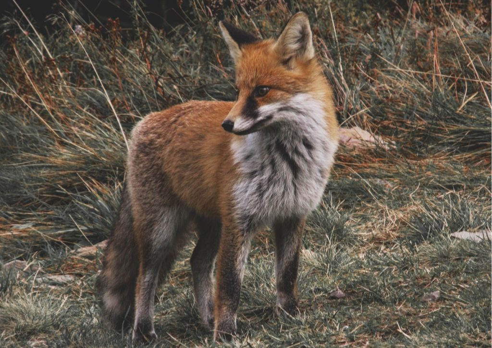

Lis
Lis jest leśnym zwierzęciem wszystkożernym, które występuje w Polsce i na innych terenach półkuli północnej. Jest gatunkiem pospolitym, zasiedlającym lasy, ale także pola, łąki i zarośla. Działa jako "sanitariusz lasu", polując na drobną zwierzynę, płazy, ryby, owady, a także żywiąc się padliną, owocami i padliną.